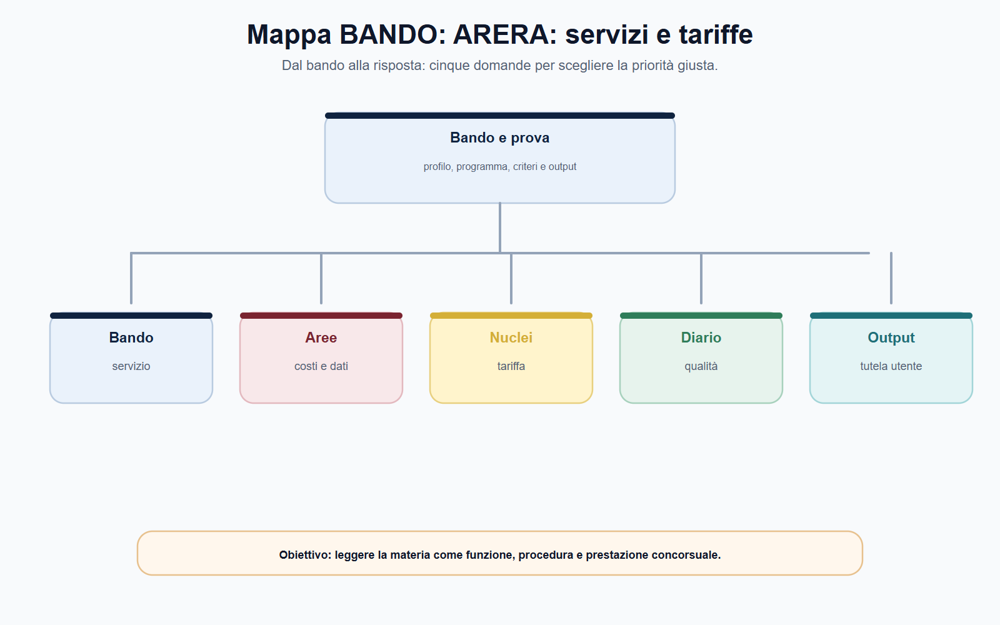
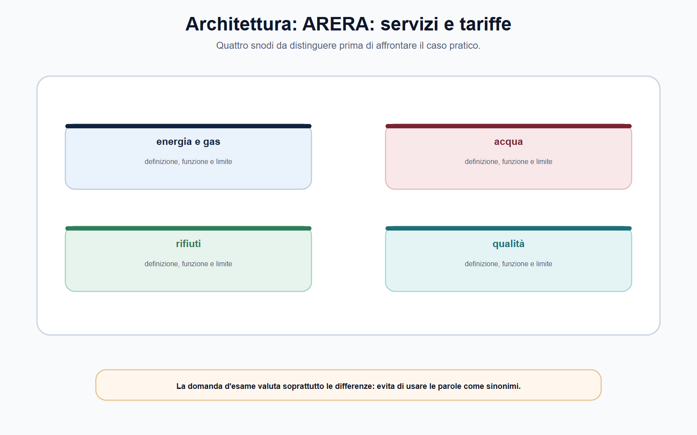
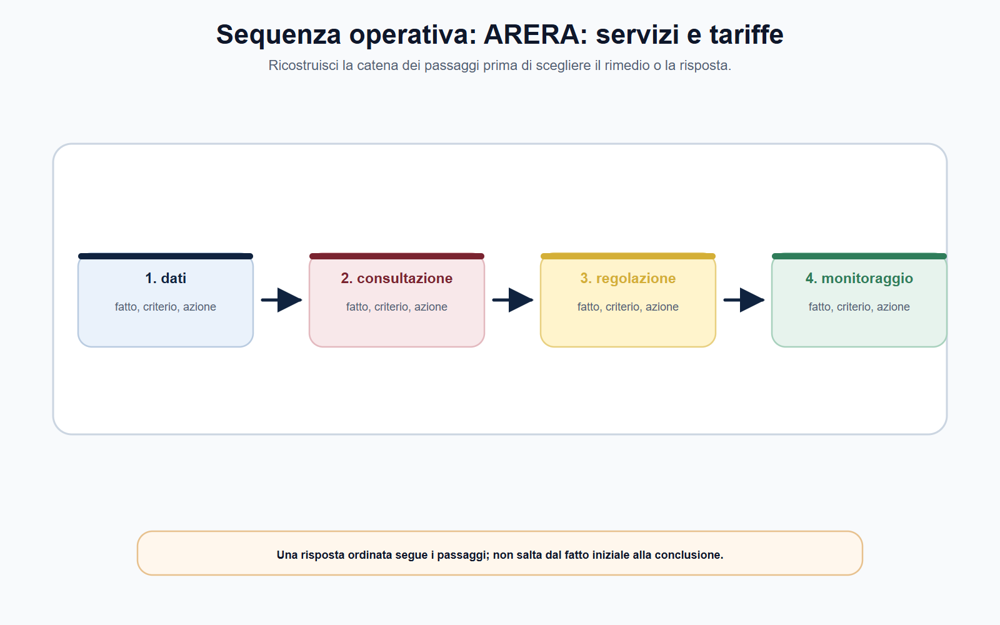
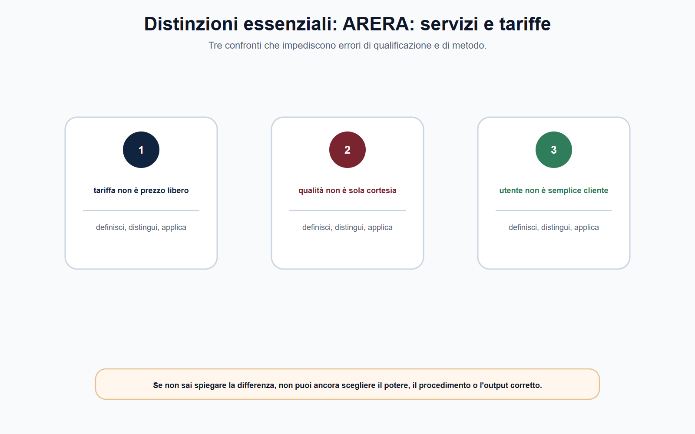

VOL-05 · Capitolo 09
M-FC05
ARERA: energia, gas,
acqua, rifiuti e tariffe
ARERA opera in settori in cui il cittadino incontra ogni giorno una prestazione essenziale. Perché l’utente vede soprattutto la fattura, è frequente immaginare che l’Autorità abbia il solo compito di «decidere le tariffe». La tariffa è un punto di arrivo di qualità, continuità, investimenti, dati, vigilanza e tutela.
01 · Il problema in prova
ARERA non è il gestore
La legge n. 481/1995 è il quadro istitutivo delle autorità di regolazione dei servizi di pubblica utilità. Nel settore dei rifiuti urbani, la legge n. 205/2017 ha attribuito all’ARERA funzioni di regolazione e controllo secondo quei principi. Acqua, energia e rifiuti hanno assetti, infrastrutture e discipline diverse: il disegno comune non autorizza a esportare una regola da un comparto all’altro.
Che cos’è
Una regolazione multilivello: il legislatore definisce l’assetto; ARERA adotta, nei limiti delle attribuzioni, regolazioni e provvedimenti; gestori applicano; enti territoriali, enti di governo d’ambito e amministrazioni competenti esercitano le funzioni loro assegnate.
A che serve in prova
A distinguere metodo tariffario, applicazione territoriale e fattura dell’utente. La domanda non è «di chi è la tariffa?», ma quale norma attribuisce il potere e quale soggetto predispone, applica o controlla il dato.
La tariffa non coincide con il costo dichiarato dal gestore.
Non è un prezzo deciso liberamente. Individua prima il servizio, il perimetro regolatorio, il testo vigente, i dati e gli obiettivi di qualità; soltanto dopo valuta la componente economica.
02 · BANDO
Cinque decisioni su questo capitolo
Le voci «ARERA», «tariffe», «qualità», «servizio idrico», «rifiuti» e «unbundling» richiedono una risposta che colleghi economia e amministrazione.
| Che cosa fai | Se la salti | |
|---|---|---|
| B — Bando | Cerca competenze ARERA, tariffe, qualità, rifiuti, idrico, dati, tutela utenti. | Riduci tutto alla bolletta. |
| A — Aree | Collega servizio, fonte, dati, qualità, tariffa, attuazione. | Accentri ogni funzione in ARERA o la ritieni irrilevante. |
| N — Nuclei | ARERA ≠ gestore; tariffa ≠ costo; qualità contrattuale ≠ tecnica. | Tratti l’aumento dichiarato come incremento automatico. |
| D — Diario | Segna formule non verificate, indennizzo universale, «decide la bolletta locale». | Ripeti le tre trappole all’orale. |
| O — Output | Mappa soggetti–poteri–atti, nota tariffaria senza formule, percorso di tutela da verificare. | Numero senza perimetro. |
03 · Schema
Dal servizio alla misura
Nel servizio idrico la regolazione tariffaria è collegata a qualità, investimenti, validazione dei dati e specificità territoriali. Nel ciclo dei rifiuti il quadro ARERA si innesta su organizzazione territoriale, pianificazione, affidamenti e documenti economico-finanziari. Nei settori energetici si distinguono attività, rete, vendita, clienti finali, qualità e assetti di mercato.

La tavola orienta la lettura del perimetro ARERA e separa il disegno comune dalle eccezioni di filiera.
04 · Multilivello
Chi regola, chi gestisce, chi tutela
Questa sequenza previene sia l’accentramento immaginario di tutte le funzioni in ARERA sia il contrario errore di considerarla irrilevante perché sono presenti enti locali o gestori.
| Livello | Domanda da porre | Esempio di output |
|---|---|---|
| Servizio | Quale filiera, attività e utente sono coinvolti? | Perimetro della prestazione regolata. |
| Fonte | Quale legge, testo integrato o deliberazione è applicabile? | Nota sulle fonti vigenti. |
| Dati e qualità | Quali costi, volumi, investimenti e indicatori sono rilevanti? | Checklist istruttoria e sistema di rilevazione. |
| Tariffa | Quale criterio collega costi efficienti, investimenti e tutela? | Schema delle componenti da verificare. |
| Attuazione | Chi applica la misura e come si controlla l’effetto? | Piano di monitoraggio. |
05 · ARERA
Regola, vigila, definisce criteri
Adotta, nei limiti delle attribuzioni, regolazioni e provvedimenti. Definisce metodi, standard, raccolte dati e strumenti di tutela. Non eroga il servizio e non sostituisce il gestore nella gestione quotidiana.
05 · Gestore
Applica le regole e fornisce il servizio
Predispone dati, piani e documenti richiesti. Gli enti territoriali e gli enti di governo d’ambito esercitano le funzioni loro assegnate. La bolletta è l’esito visibile, non l’intero sistema.
06 · Tariffe
Un criterio regolatorio, non un numero isolato
La tariffa deve contribuire alla sostenibilità del servizio; può riconoscere costi pertinenti e investimenti; può incentivare efficienza e qualità; deve essere applicata secondo regole trasparenti. Non è la semplice somma dei costi di bilancio né un prezzo fissato per intuizione politica.
| Elemento | Funzione regolatoria | Errore da evitare |
|---|---|---|
| Costo | Base informativa da qualificare. | Ritenerlo automaticamente riconoscibile. |
| Investimento | Collega servizio presente e capacità futura. | Trattarlo come beneficio certo senza verifica. |
| Qualità | Misura risultati per utenti e sistema. | Ridurla alla sola rapidità di risposta. |
| Tariffa | Trasforma criteri in corrispettivi secondo la fonte. | Confonderla con l’intera bolletta o con una tassa. |
| Dato | Rende controllabile la decisione. | Usarlo senza periodo, perimetro o validazione. |
Il Metodo Tariffario Rifiuti MTR-3, per il terzo periodo regolatorio 2026-2029, definisce il quadro per le entrate tariffarie e per le tariffe di accesso agli impianti. Insegna la relazione tra costi, investimenti e trasparenza: non autorizza a trasferire formule ad altri servizi.
07 · Architettura
Tariffe e qualità si leggono insieme
Un’impostazione che guardi solo al costo immediato può produrre disincentivi alla manutenzione, all’affidabilità o allo sviluppo. Price cap, recupero dei costi o regolazione incentivante restano strumenti concettuali: coefficienti, periodi e deroghe dipendono dal testo integrato vigente.

La tavola mette a confronto tariffe e qualità del servizio senza sovrapporli.
08 · Qualità e tutela
Contrattuale, tecnica, utente
La regolazione di qualità impedisce che l’efficienza economica sia ottenuta comprimendo il livello del servizio. Gli indennizzi automatici, nei regimi che li prevedono, collegano standard e utente: non sono un risarcimento integrale e non vanno supposti per qualsiasi disservizio.
Qualità contrattuale
Relazione con l’utente: accessibilità, tempi, informazioni, reclami, fatturazione e altre prestazioni individuate dalla disciplina.
Qualità tecnica
Esiti operativi e infrastrutturali: continuità, sicurezza, affidabilità, perdite o altri parametri della filiera.
Tutela
Informazione, reclami, segnalazioni, Sportello per il consumatore Energia e Ambiente (Acquirente Unico) e conciliazione, da verificare nel settore.
Il Servizio Conciliazione aiuta le parti a trovare un accordo: non emette una pronuncia né liquida un danno come un giudice. Per i rifiuti urbani la disciplina conosce un assetto specifico.
09 · Dati
Unbundling e conti separati
Nessuna regolazione tariffaria o di qualità può reggere senza dati comparabili. La separazione contabile o unbundling, nei casi previsti, distingue attività, servizi, costi, ricavi e transazioni che non sarebbero leggibili in una rappresentazione aggregata. Il Testo Integrato Unbundling Contabile, i conti annuali separati e i manuali applicativi sono esempi di questa architettura.
| Controllo | Domanda operativa |
|---|---|
| Perimetro | L’attività è inclusa nella raccolta e nella regola? |
| Attribuzione | Costi e ricavi sono assegnati secondo criteri dichiarati? |
| Riconciliazione | I dati sono coerenti con le fonti contabili? |
| Uso | Il dato sostiene una decisione o segnala un approfondimento? |
Dai fatti alla competenza e alla decisione: i conti non sostituiscono il giudizio.

10 · REMIT
Mercato all’ingrosso, non bolletta
Il regolamento REMIT vieta abuso di informazioni privilegiate e manipolazione nei mercati dell’energia all’ingrosso. Oggetto, prova, autorità e rimedio non coincidono con una controversia tariffaria o con un disservizio dell’utente finale. Il regolamento (UE) 2024/1106 ha rafforzato il ruolo di ACER nelle indagini a dimensione transfrontaliera; le autorità nazionali conservano la competenza a stabilire se vi sia stata una violazione e ad adottare l’enforcement.

Se non sai spiegare la differenza tra tariffa, qualità, tutela e mercato all’ingrosso, non puoi ancora scegliere il potere.
11 · Caso guidato
PEF rifiuti e disservizi
Un ente territoriale riceve dal gestore un piano economico-finanziario che prevede un aumento delle entrate tariffarie, giustificato con maggiori costi di raccolta e un programma di investimenti. Le associazioni segnalano disservizi e informazioni poco chiare. Un candidato afferma che ARERA deve approvare direttamente ogni tariffa comunale e che, se i costi aumentano, l’incremento è inevitabile.
| Passaggio | Ragionamento |
|---|---|
| Quadro | Norma e regolazione vigenti, ruolo dell’ente territorialmente competente, perimetro del servizio, dati del piano, criteri di riconoscimento. |
| Costi e investimenti | Pertinenza, documentazione, coerenza; investimenti descritti e collegati a risultati misurabili. |
| Qualità | Indicatori e obblighi informativi. Il disservizio non dimostra da solo l’illegittimità di ogni componente. |
| Chiusura | Dati → criterio → qualità → decisione → monitoraggio. Canale di reclamo o tutela, senza confondere regolazione e risarcimento individuale. |
12 · Verifica
Due domande da saper spiegare
Illustri il ruolo di ARERA nella regolazione tariffaria e nella qualità.
ARERA regola servizi di pubblica utilità nel quadro della legge n. 481/1995 e delle attribuzioni settoriali. La tariffa collega perimetro, costi pertinenti, investimenti, qualità, dati e controlli. Occorre distinguere qualità contrattuale e tecnica. Unbundling e conti separati rendono le informazioni confrontabili. Reclami e conciliazione dipendono dalla disciplina del settore.
La tariffa regolata coincide sempre con il costo esposto in bilancio?
No. Bilancio e informazioni del gestore sono una base conoscitiva. La tariffa dipende da perimetro, criteri di riconoscimento, dati verificati, investimenti, qualità e atto regolatorio applicabile.
13 · Mini-esercizio
«Costo +12%, quindi tariffa +12%»
Trasforma l’affermazione in una nota istruttoria. L’aumento dichiarato resta un dato da qualificare, non una conclusione tariffaria automatica.
| Verifica | Appunto da predisporre |
|---|---|
| Perimetro | Quale attività, utenti e periodo rappresenta il costo indicato? |
| Dati | Fonte, classificazione, volumi, evidenze e controlli svolti. |
| Criterio | Quale disciplina vigente regola il riconoscimento del costo? |
| Qualità e investimenti | Quali indicatori sono associati? Gli investimenti sono distinti e collegati a risultati? |
| Decisione e monitoraggio | Quale soggetto e quale atto definiscono la determinazione? Come si controlleranno gli effetti? |
14 · Errori
Distinzioni da tenere ferme
Errore
«ARERA decide direttamente ogni componente della bolletta o della tariffa locale.»
Correzione
La regolazione opera in un sistema di fonti e competenze multilivello. Occorre distinguere metodo e criteri dell’Autorità, applicazione nel settore e nel territorio, ruolo di gestori ed enti competenti, contenuto dell’atto effettivamente adottato.
Non inventare formule, periodi, standard o importi di indennizzo. Tariffe e qualità del servizio non sono espressioni equivalenti. REMIT non si risolve con le categorie della bolletta.
15 · Da tenere ferme
Cinque regole, con il perché
1. ARERA regola servizi di pubblica utilità: tariffe, qualità, dati, vigilanza e tutela. Non è il gestore.
2. La tariffa non coincide con il costo dichiarato: dipende da servizio, criteri vigenti, dati, investimenti e qualità.
3. Qualità contrattuale e tecnica sono distinte ma complementari.
4. Unbundling e conti annuali separati rendono i dati più leggibili, senza sostituire la decisione dell’Autorità.
5. Reclami e conciliazione sono tutele diverse dal giudizio e vanno verificati nel settore interessato.
Prossimo capitolo
AGCOM: comunicazioni, media, utenti e piattaforme
Dai servizi a rete alle comunicazioni. Reti, contenuti, utenti e piattaforme richiedono fonti diverse: AGCOM non è un potere digitale indistinto né il Garante privacy.